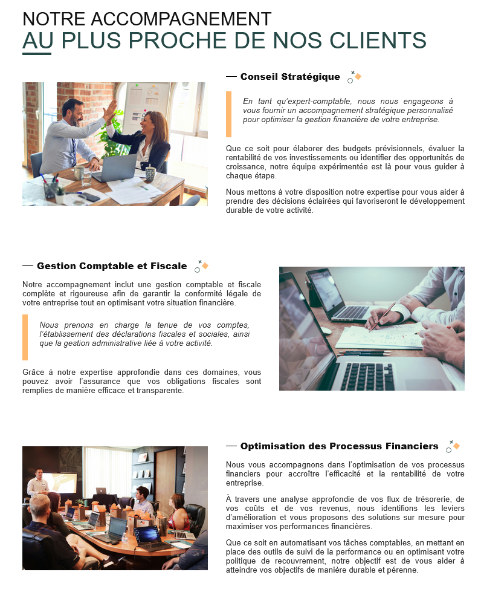
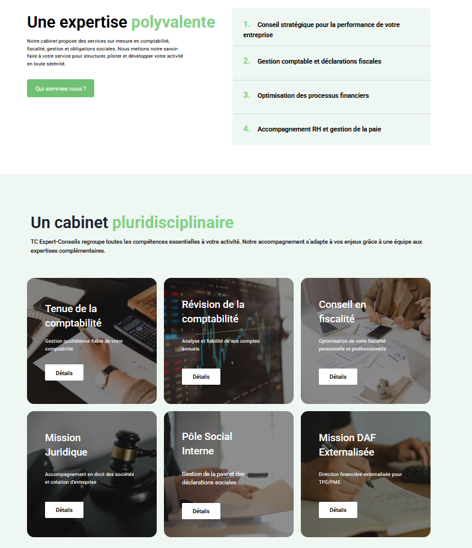
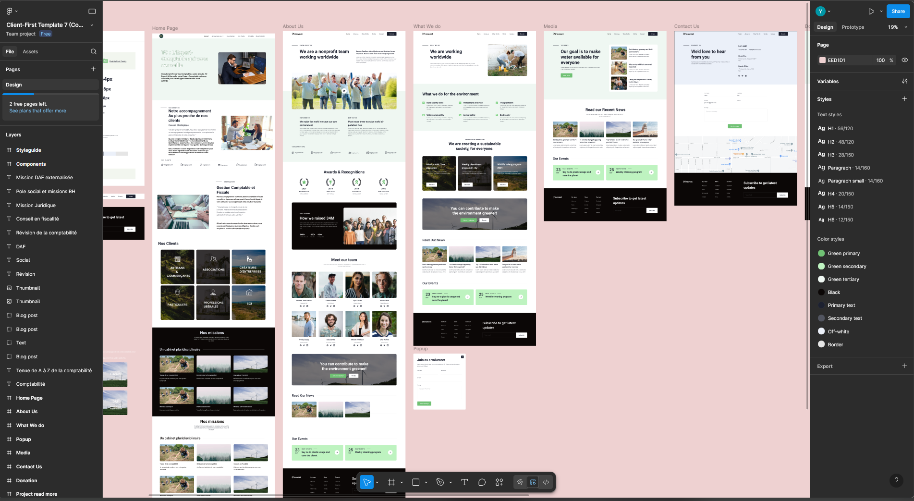
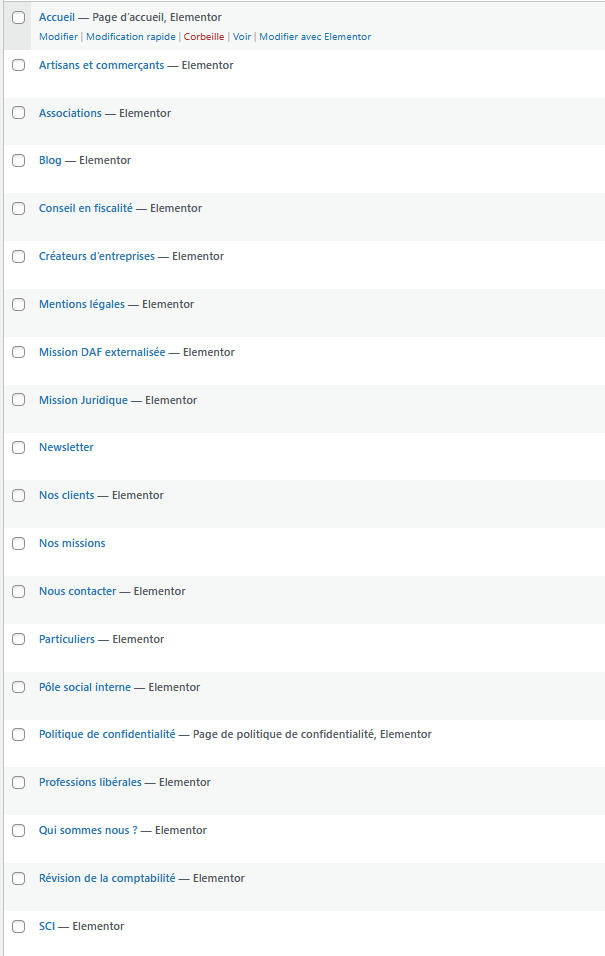

Modernisation de l'identité numérique d'un cabinet comptable
Avant
{kind=link}

Après
{kind=link}

Présentation de l'entreprise et contexte du stage
L'entreprise d'accueil est une structure spécialisée dans le développement web et les solutions digitales. Elle propose à ses clients des services allant de la création de sites vitrine à des prestations techniques plus complexes telles que le déploiement de CMS, le référencement SEO ou l'audit de performances.
Le besoin exprimé par le client, un expert-comptable, était de remettre au goût du jour son site Internet. Son ancien site souffrait d'un design daté, d'une mauvaise lisibilité mobile et d'un manque d'organisation dans les contenus. C'est dans ce contexte que j'ai été chargé de piloter la refonte complète du site, de la conception UI sur Figma à l'intégration finale sous WordPress.
Objectifs de la mission
- Proposer une interface claire et professionnelle : le design devait inspirer confiance et refléter l'activité sérieuse d'un cabinet comptable.
- Améliorer la hiérarchisation de l'information : restructurer les contenus pour qu'ils soient plus lisibles et logiques.
- Renforcer la lisibilité sur les supports mobiles : garantir une bonne lecture et navigation sur smartphones et tablettes.
- Optimiser les performances et le SEO : appliquer les bonnes pratiques pour rendre le site plus rapide et mieux référencé.
Déroulement du projet
- Recherche et inspiration : Analyse de sites concurrents pour définir les tendances graphiques du secteur.
- Conception sur Figma : Réalisation de maquettes haute fidélité soumises au client pour validation.
- Intégration sur WordPress : Installation de WordPress et utilisation du constructeur Elementor pour recréer les pages.
- Ajustements : Prise en compte des retours client pour modifier des images, titres ou sections.
- Optimisations finales : Ajout du plugin Yoast SEO, vérification responsive et test des formulaires WPForms.
Outils et Technologies utilisés
Compétences acquises
Design & UX :
Conception de maquettes haute fidélité
{kind=link}

Développement :
Intégration sur mesure avec Elementor et optimisation SEO (Yoast SEO) .
{kind=link}

Activités du référentiel mobilisées
- Bloc 1 : 1.2 (Réponse aux demandes), 1.3 (Développement de la présence en ligne), 1.5 (Mise à disposition d'un service).
- Bloc 2 (SLAM) : 2.1 (Conception et développement), 2.2 (Maintenance évolutive), 2.3 (Gestion des données).
- Bloc 3 : 3.1 (Protection des données), 3.3 (Sécurisation des usages), 3.5 (Cyber sécurisation d'une solution).
Bilan du stage
Cette mission a validé ma capacité à gérer un projet client de A à Z, en respectant des exigences de design et de performance.